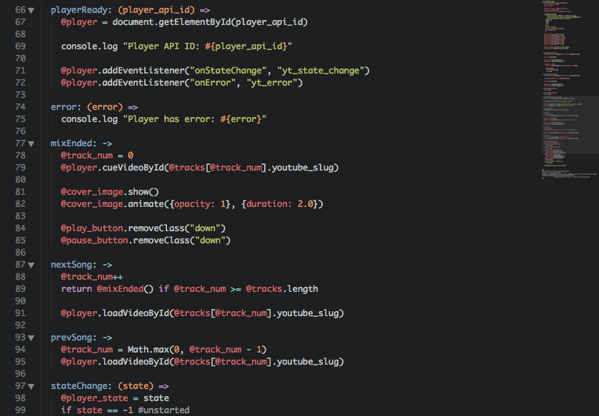
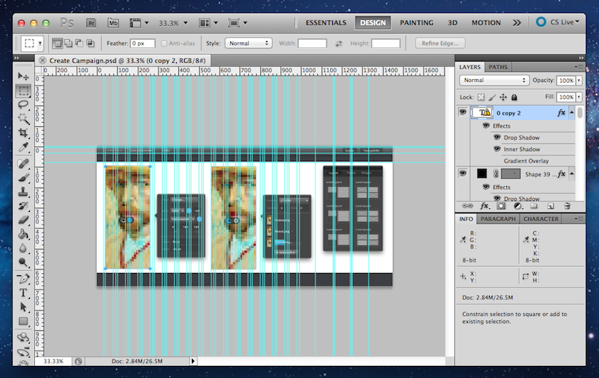

Web Design Sans-Photoshop by Ben Taylor (@taybenlor) Web Applications Developer and Hobbyist Designer   Tools & Techniques Grids HSL button, .button{ /* ... */ border: 1px solid hsl(196, 100%, 45%); background: hsl(196, 100%, 50%); color: hsl(196, 100%, 20%); } Click Me! Text Shadow & Box Shadow button, .button{ /* ... */ text-shadow: 0 1px rgba(255,255,255,0.4); } Click Me! button, .button{ /* ... */ box-shadow: border: none; box-shadow: inset 0 0px 3px rgba(255,255,255,0.6), 0 6px 0px hsl(196, 100%, 40%), 0 8px 2px rgba(100,100,100,0.3); } Click Me! Icons as Fonts? k ::before & ::after /* ... */ button.upload::before{ content: 'c'; font-family: "Pictos"; margin-right: 0.75em; } Upload /* ... */ button.next::after{ /* magic */ } Next Wireframing & Illustrating Recap